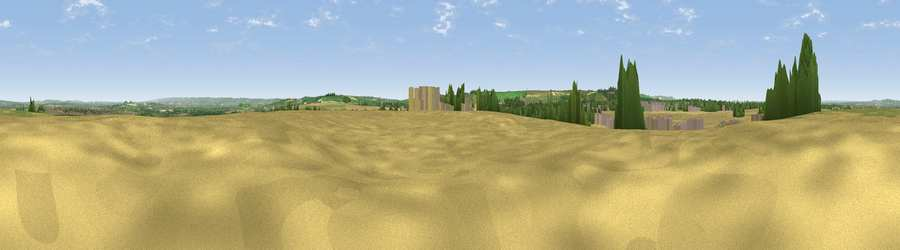

Hagbourne Hill
#25173 in England · top 34% of its area beats it · near ChiltonThe view, rendered

A 360° render of this exact spot computed from the terrain model, tree cover and land cover — summer colours, afternoon light, calibrated against photographs of famous viewpoints. Real trees, hedges and buildings will differ in detail.
The panorama
Grey silhouette: terrain skyline in each direction (720 bearings, Earth curvature and refraction included). Dashed green: skyline with trees (+15 m) and buildings (+8 m) as obstacles. Blue strip: how far the ground is visible on each bearing.
Where the view opens
Wedge length = distance to the farthest visible ground on that bearing (vegetation-aware). Rings at 10, 25 and 50 km.
What fills the view
67% cropland · 18% grassland · 10% woodland · 4% built-up
Angular shares of the visible panorama (visual magnitude), not map area. Landscape diversity 0.41 (0–1 Shannon).
Key numbers
More beautiful places nearby
The staircase of upgrades: each row has a higher view potential than everything closer. Driving times are estimates from straight-line distance, calibrated against real road routing — check an actual route before setting out.
| Place | Direction | Drive | Score |
|---|---|---|---|
| Viewpoint near Chilton | WSW · 3 km | ~6 min | 54.2 |
| Viewpoint near Blewbury | SE · 4 km | ~8 min | 60.8 |
| Viewpoint near Compton | SE · 6 km | ~13 min | 64.1 |
| Round Hill | NE · 9 km | ~18 min | 70.1 |
| Viewpoint near Woolstone | W · 19 km | ~33 min | 70.9 |
| Viewpoint near Woolstone | W · 20 km | ~34 min | 76.7 |
| Martinsell viewpoint | SW · 39 km | ~58 min | 77.3 |
| Broadway Hill | NW · 62 km | ~85 min | 77.7 |
51.57873, -1.28476 · source: osm peak · position refined by local search. Computed location — check access rights before visiting.